第02讲 展开与折叠、截一个几何体
第02讲 展开与折叠、截一个几何体

课程标准 | 学习目标 |
①了解几何体的展开图及还原； ②截一个几何体。 | 1．了解棱柱、圆柱、圆锥的侧面展开图，特别是正方体的展开图，通过展开图还原立体图形，并会求表面积和体积。 2．经历切截以及从不同方向看等数学活动，积累数学活动经验； |


知识点01 正方体的平面展开图
正方体是特殊的棱柱，它的六个面都是大小相同的正方形，将一个正方体的表面展开，可以得到11种不同的展开图，把它归为四类：一四一型有6种；二三一型有3种；三三型有1种；二二二型有1种.
正方体展开图口诀： ①一线不过四;田凹应弃之； ②找相对面：相间，“Z”端是对面；③找邻面：间二，拐角邻面知.
【即学即练1】
1．（23-24九年级下·湖北荆州·阶段练习）下面哪个图象不是正方体的表面展开图（ ）
A． B．
B． C．
C． D．
D．
【答案】B
【分析】本题考查了正方体的侧面展开图，利用不能出现同一行有多于 个正方形的情况，不能出现田字形、凹字形、七字形的情况进行判断即可；理解展开图的类型是解题的关键．
个正方形的情况，不能出现田字形、凹字形、七字形的情况进行判断即可；理解展开图的类型是解题的关键．
【详解】解：A.可折叠还原成正方体，故此项不符合题意；
B.出现“七字形”，不能折叠还原成正方体，故此项符合题意错误；
C.可折叠还原成正方体，故此项不符合题意；
D.可折叠还原成正方体，故此项不符合题意；
故选：B．
2．（2024·河北石家庄·三模）如图，纸板上有9个小正方形（其中5个有阴影，4个无阴影），从图中4个无阴影的小正方形中选出一个（剩余的剪掉），与5个有阴影的小正方形一起折成一个正方体的包装盒，不同的选法有（ ）．

A．4种 B．3种 C．2种 D．1种
【答案】C
【分析】本题考查正方体的展开图，掌握正方体的11种展开图是解题的关键，根据正方体的展开图进行判断即可．
【详解】解：如图，共有2种不同的选法：
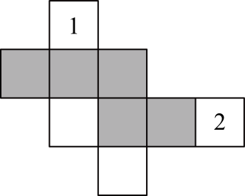
故选C．
知识点02 截一个几何体
用一个平面去截一个几何体，截出的面叫做截面．截面的形状可能是三角形、四边形、五边形、六边形或圆等等．
【即学即练1】
1．（2024·四川成都·一模）用一个平面去截下列几何体，截面可能是矩形的几何体是（ ）
A．
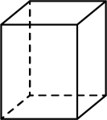
B． C．
C．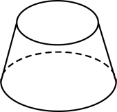
D．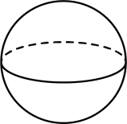
【答案】A
【分析】本题考查了截一个几何体：用一个平面去截一个几何体，截出的面叫做截面．根据一个几何体有几个面，则截面最多为几边形解题即可．
【详解】解：用一个平面去截棱柱，截面可能是矩形．
故选A．
2．（2024·江苏南京·三模）如图，用一个平面从不同的位置，沿着不同的方向截取一个圆柱，圆柱的截面不可能是（ ）
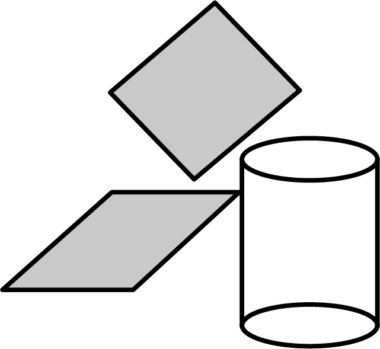
A． B． C． D．
D．
【答案】D
【分析】本题主要考查截面的相关知识，从不同角度去截几何体，根据得到的截面形状去判断选项，即可解答．
【详解】解：当截面与轴截面平行时，得到的截面形状为长方形，故A选项正确；
当截面与轴截面斜交时，得到的截面的形状是椭圆或梯形，故B选项正确；
当截面与轴截面垂直时，得到的截面形状是圆，故C选项正确；
所得截面的形状不可能是D选项中形状；
故选D．

题型一 几何体展开图的认识
【典例1】 （2024·北京石景山·二模）下图是某几何体的展开图，该几何体是（ ）
A．三棱柱 B．三棱锥 C．四棱锥 D．圆柱
【答案】A
【分析】本题考查棱柱的展开与折叠，掌握棱柱展开图的特征是正确判断的关键．通过展开图的面数，展开图的各个面的形状进行判断即可．
【详解】解：从展开图可知，该几何体有五个面，两个三角形的底面，三个长方形的侧面，因此该几何体是三棱柱，
故选：A．
【变式1】（2024·陕西西安·模拟预测）下面图形中，经过折叠不能围成棱柱的是（ ）
A． B．
B． C．
C． D．
D．
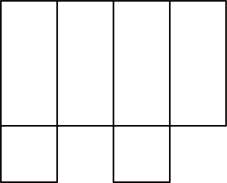
【答案】D
【分析】本题考查了几何体的展开图，解决此题的关键是要有一定的空间想象能力．根据棱柱的特点作答．
【详解】解：A．能围成正方体，故本选项不符合题意；
B．能围成四棱柱，故本选项不符合题意；
C．能围成三棱柱，故本选项不符合题意；
D．经过折叠不能围成棱柱，故本选项符合题意．
故选：D．
【变式2】（23-24六年级下·黑龙江哈尔滨·期中）如图，下方立体图形的展开图是（ ）
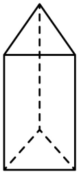
A． B．
B．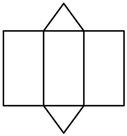
C． D．
D．
【答案】B
【分析】本题主要考查了三棱柱的展开图，熟知三棱柱的侧面展开图是三个长方形，上下底面的展开图是三角形是解题的关键．
【详解】解：三棱柱的侧面展开图是三个长方形，上下底面的展开图是三角形，则四个选项中只有B选项符合题意，
故选：D．
【变式3】（2024·吉林白山·一模）如图，下面的平面图形是四个立体图形的展开图，其中展开图与立体图形名称对应正确的是（ ）
A．正方体 B．圆锥 C．球 D．三棱柱
D．三棱柱
【答案】A
【分析】此题主要考查了几何体的展开图，常见几何体的侧面展开图：①圆柱的侧面展开图是长方形；②圆锥的侧面展开图是扇形；③正方体的侧面展开图是长方形；④三棱柱的侧面展开图是长方形．
【详解】A．侧面由四个正方形组成，且上下底面也都是正方形，则该立体图形是正方体，故本选项符合题意．
B．侧面展开图是长方形，上下底面是圆，则该立体图形是圆柱，故本选项不符合题意．
C．侧面展开图是半圆，底面是圆，则该立体图形为圆锥，故本选项不符合题意．
D．侧面是三个三角形，且底面是三角形，则该立体图形是三棱锥，故本选项不符合题意．
故选：A．
题型二 由展开图计算几何体的面积或体积
【典例2】（23-24六年级上·山东泰安·期中）如图，是一个几何体的表面展开图．
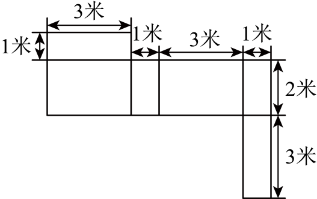
(1)该几何体是______；
(2)依据图中数据求该几何体的体积．
【答案】(1)长方体
(2)该几何体的体积是6立方米
【分析】本题考查了立体图形的展开图和体积：
（1）根据展开图判断即可；
（2）根据长方体的体积=长×宽×高求解即可；
【详解】（1）由展开图可知，该几何体是长方体．
故答案为：长方体；
（2）体积： （立方米）
（立方米）
答：该几何体的体积是6立方米．
【变式1】（23-24七年级上·江西抚州·期中）如图所示是一个几何体的表面展开图．

(1)该几何体的名称是__________；
(2)求该几何体体积（结果保留 ）．
）．
【答案】(1)圆柱
(2)
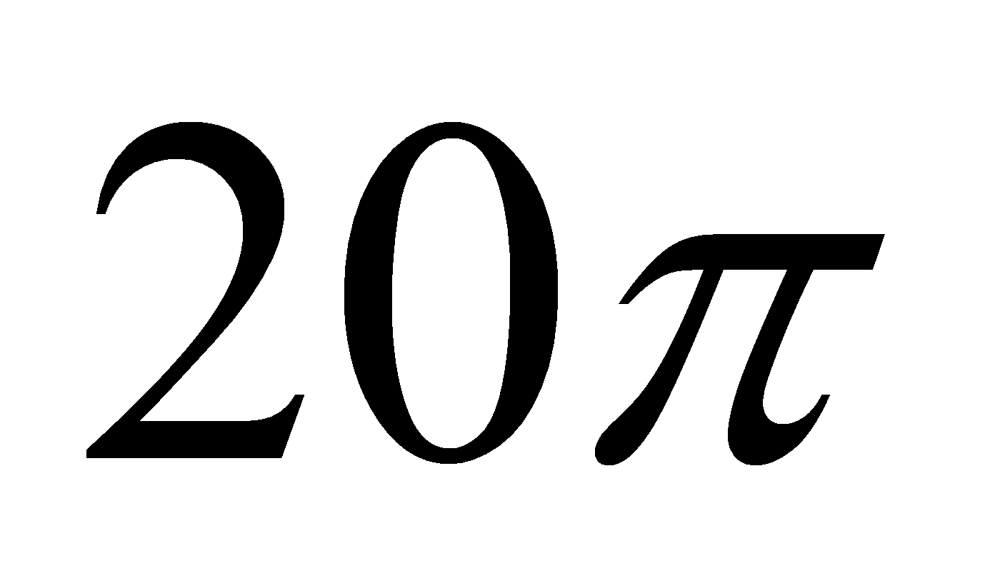
【分析】本题主要考查了几何体的展开图，解题的关键是：
（1）依据展开图中有长方形和两个全等的圆，即可得出结论；
（2）依据体积计算公式，即可得到该几何体的体积．
【详解】（1）解：该几何体的名称是圆柱，
故答案为：圆柱；
（2）该几何体体积
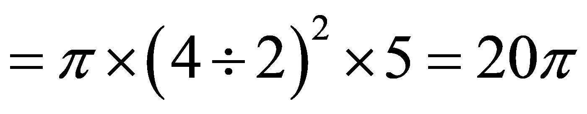
．【变式2】（23-24九年级下·北京·阶段练习）某种产品的形状是长方体，长为
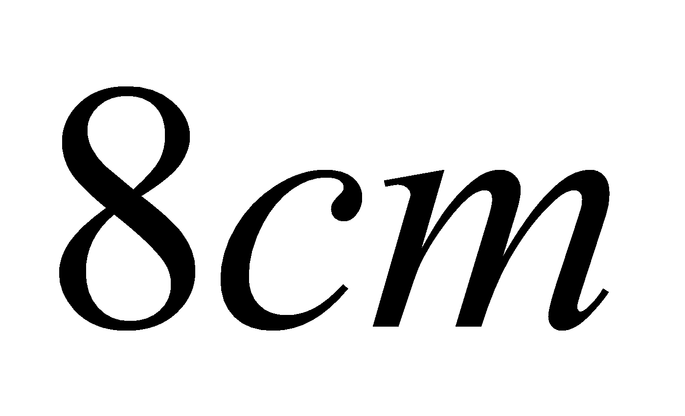
，它的展开图如图．
(1)求长方体的体积；
(2)请为厂家设计一种包装纸箱，使每箱能装8件这种产品，要求设计时不计空隙且该纸箱所用材料最少（纸箱的表面积最小），并请求出你设计的纸箱的表面积．
【答案】(1)
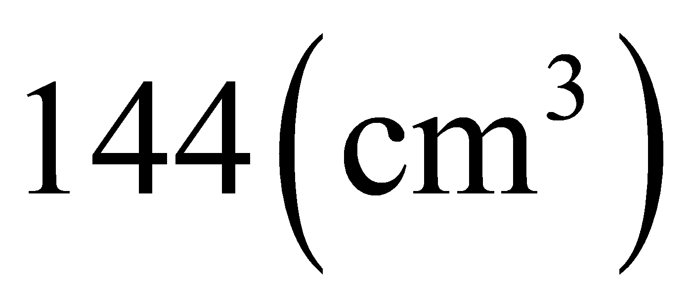
，详见解析(2)
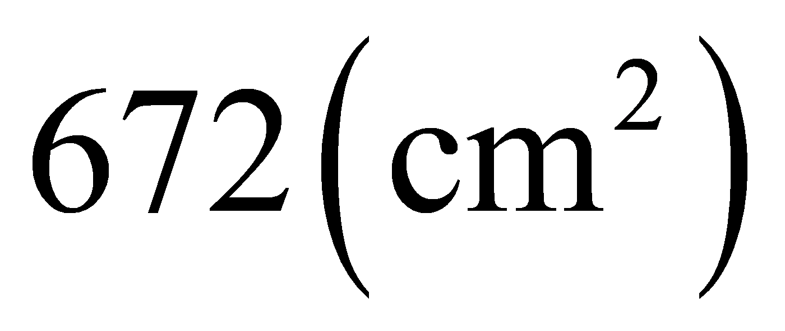
，详见解析【分析】本题考查几何体的展开图、几何体的表面积等知识，
（1）根据已知图形得出长方体的高进而得出答案；
（2）根据长方体的表面积公式计算即可．
解题的关键是理解题意，灵活运用所学知识解决问题，属于中考常考题型．
【详解】（1）设长方体的高为
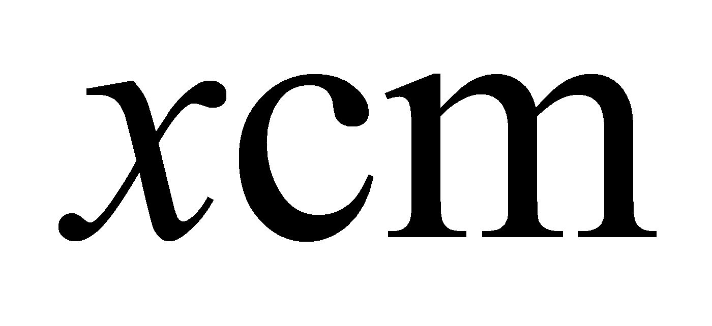
，则长方形的宽为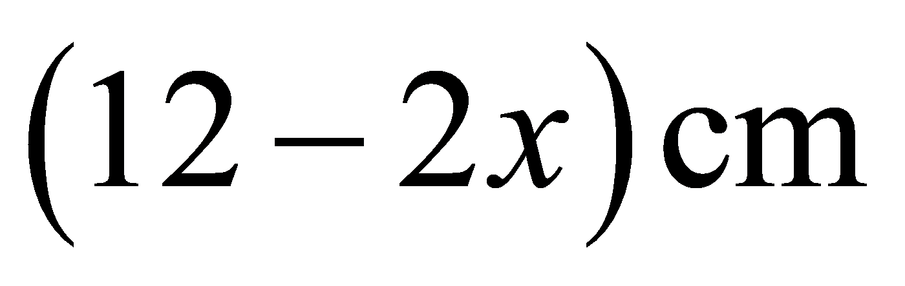
，根据题意可得：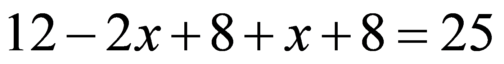
，解得： ，
，
所以长方体的高为 ，宽为
，宽为 ，长为
，长为 ，
，
长方体的体积为：
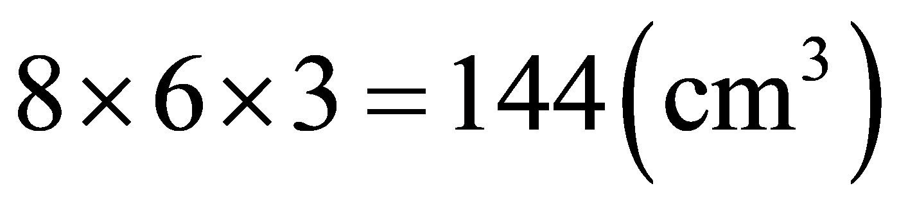
；（2）因为长方体的高为，宽为，长为，
所以装8件这种产品，应该尽量使得
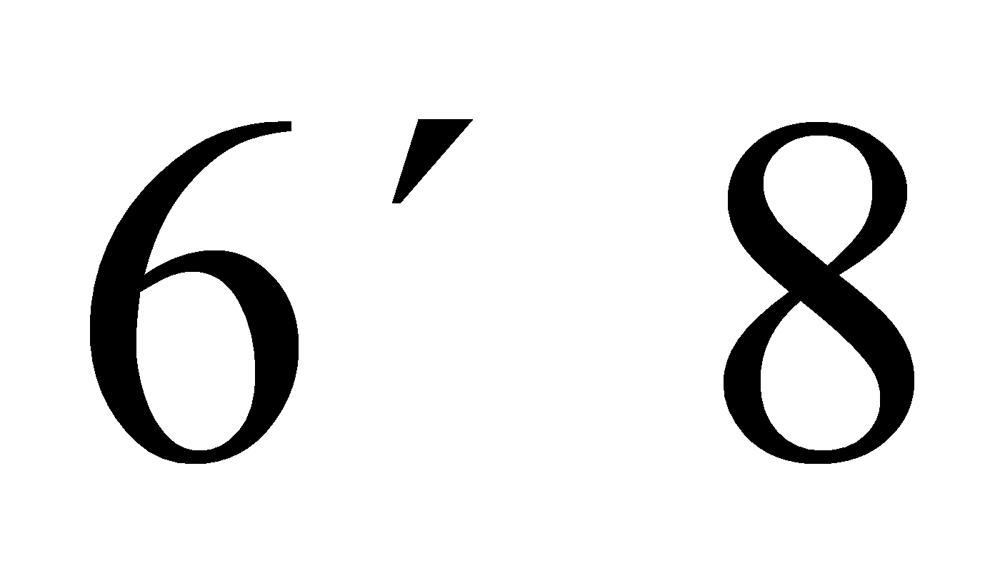
的面重叠在一起，纸箱所用材料就尽可能少，这样的话，8件这种产品可以用
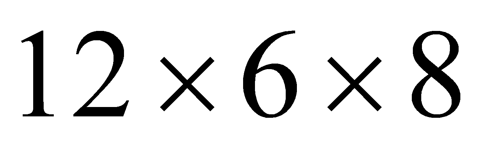
的包装纸箱，再考虑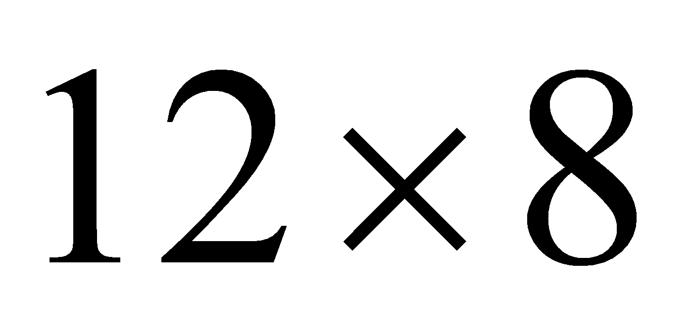
的面积最大，所以的面重叠在一起，纸箱所用材料就尽可能少，所以设计的包装纸箱为
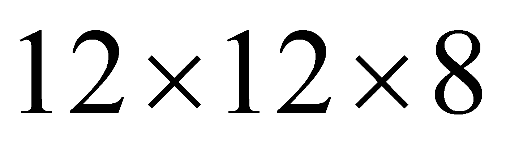
规格，该产品的侧面积分别为：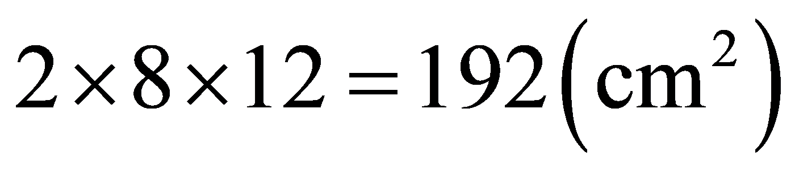
，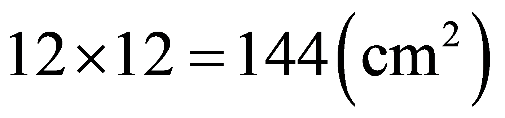
，纸箱的表面积为：
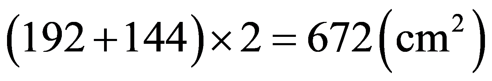
．【变式3】（23-24七年级上·广东佛山·阶段练习）如图所示为一个棱柱形状的食品包装盒侧面展开图.

(1)这个食品包装盒的几何体名称是___________________；
(2)若 ，
，
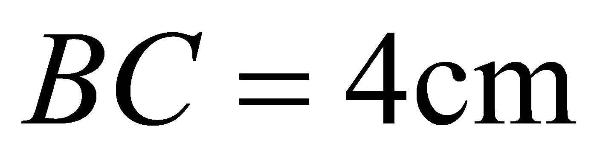
， ，
， ，求这个几何体的所有棱长的和及体积.
，求这个几何体的所有棱长的和及体积.【答案】(1)三棱柱
(2)
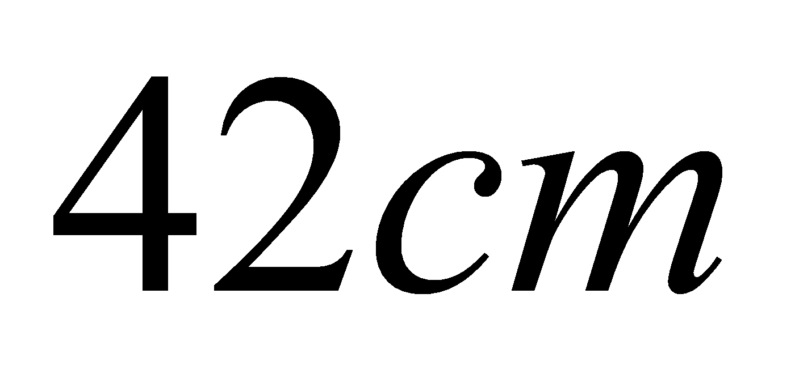
；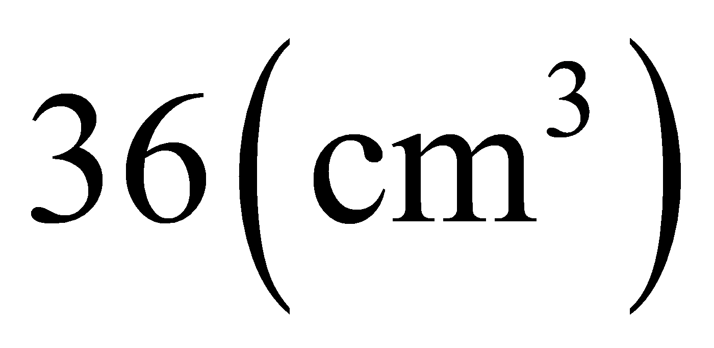
【分析】（1）根据图示可知有三个长方形和2个三角形组成，故可知是三棱柱；
（2）这个多面体的棱长之和是把所有棱长加起来，体积是底面积×高计算即可；
【详解】（1）解：共有 3 个长方形组成侧面， 2 个三角形组成底面， 故是三棱柱；
（2）∵
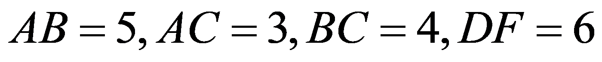
， 几何体的所有棱长之和为：
几何体的所有棱长之和为：
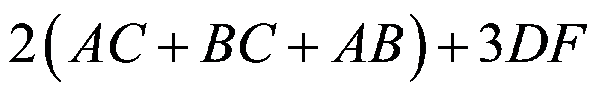
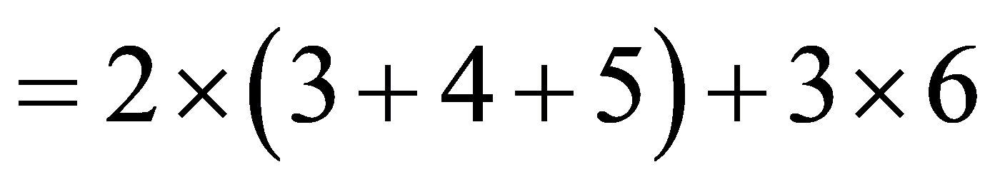
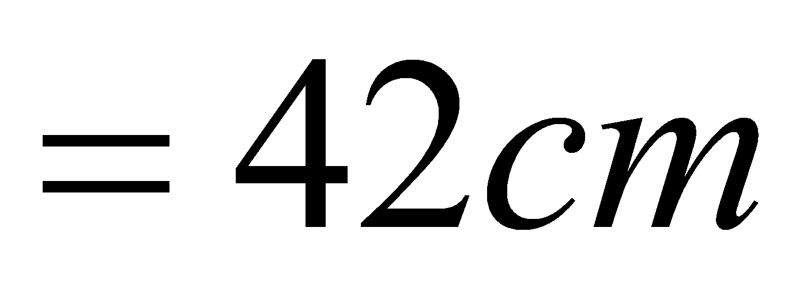
；∴体积为
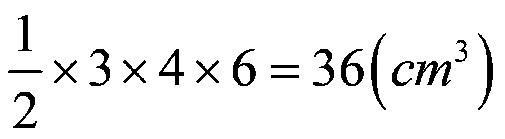
．【点睛】本题主要考查了三棱柱的展开图与几何体之间的联系和体积的求法，从实物出发，结合具体的问题，辨析几何体的展开图，通过结合立体图形与平面图形的转化，建立空间观念，是解决此类问题的关键．
题型三 正方体几种展开图的识别
【典例3】 （2024·山西阳泉·二模）下列图形为正方体展开图的是（ ）
A．
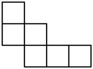
B．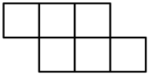
C．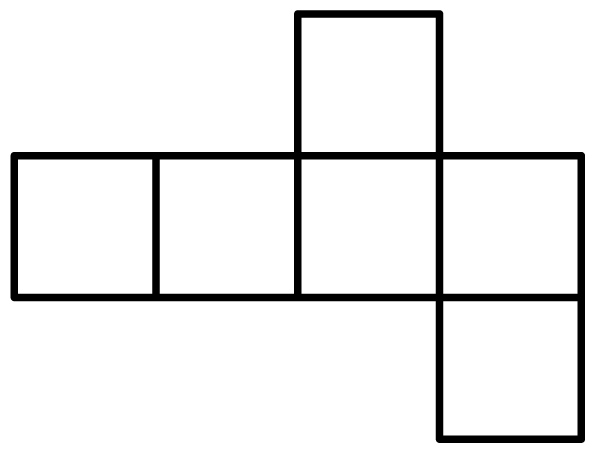
D．
【答案】C
【分析】本题考查了正方体的展开图．熟练掌握正方体的展开图是解题的关键．
根据正方体展开图包括 ，
， ，
，
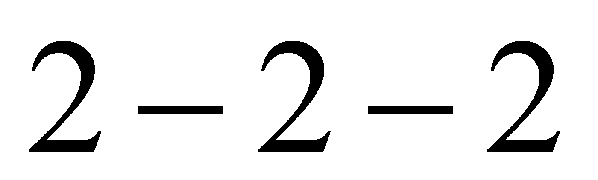
，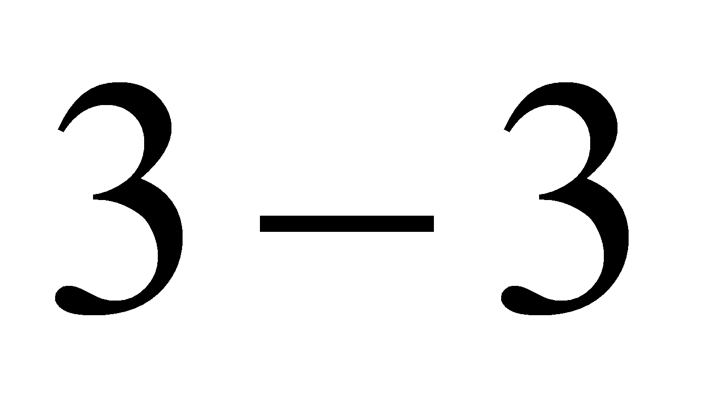
型，进行判断作答即可．【详解】解：由题意知，
是正方体的展开图，
故选：C．
【变式1】（22-23九年级下·海南省直辖县级单位·期中）下列图形中，不是正方体表面展开图的是（ ）
A． B． C．
C． D．
D．
【答案】D
【分析】本题考查了几何体的展开图．明确只要有“田”字格的展开图都不是正方体的表面展开图是解题的关键．由平面图形的折叠及正方体的展开图解题．
【详解】解：A、B、C经过折叠后，可以围成正方体；
D中含有“田”字格，故不是正方体的展开图．
故选D．
【变式2】（23-24九年级下·河北保定·期中）分割并裁剪硬纸板得到如图所示的几个边长都相同的小正方形，若再剪去一个小正方形，便可折成一个正方体，剪掉的小正方形不可能是（ ）

A．① B．② C．③ D．④
【答案】C
【分析】本题考查由展开图折叠成正方体，由正方体的平面展开图，按照题中标号逐个减掉验证即可得到答案，熟记正方体的平面展开图，借助几何直观和空间观念还原成立体图形是解决问题的关键．
【详解】解：由题意知，去掉小正方形①，如图所示：
可折成一个正方体，不符合题意；
去掉小正方形②，如图所示：
可折成一个正方体，不符合题意；
去掉小正方形③，如图所示：
不能折成一个正方体，符合题意；
去掉小正方形④，如图所示：
可折成一个正方体，不符合题意；
综上所述，去掉①或②或④，均能折叠成一个正方体，去掉小正方形③，不能折叠成一个正方体，
故选：C．
【变式3】（23-24七年级上·贵州贵阳·期末）如图所示，从①②③④中选取一个正方形，能与阴影部分组成正方体展开图的是（ ）
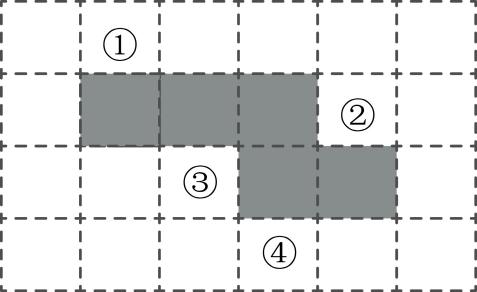
A．① B．② C．③ D．④
【答案】A
【分析】本题考查的是正方体的展开图，正方体展开图有11种特征，分四种类型，即：第一种：“1-4-1”结构，即第一行放1个，第二行放4个，第三行放1个；第二种：“2-2-2”结构，即每一行放2个正方形，此种结构只有一种展开图；第三种：“3-3”结构，即每一行放3个正方形，只有一种展开图；第四种：“1-3-2”结构，即第一行放1个正方形，第二行放3个正方形，第三行放2个正方形．
【详解】解：如图，
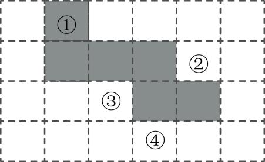
①能与阴影部分组成正方体展开图，
故选A
题型四 正方体相对两面上的字
【典例4】 （2024·河南南阳·二模）北京时间2023年10月26日11时14分，搭载神舟十七号载人飞船的长征二号F遥十七运载火箭，在酒泉卫星发射中心点火发射，进入预定轨道，发射取得圆满成功将“圆满发射成功”六个字分别写在某正方体的表面上，如图是它的一种展开图，则在原正方体中，与“圆”字所在面相对的面上的汉字是（ ）
A．发 B．射 C．成 D．功
【答案】D
【分析】本题主要考查了正方体相对两个面上的问题，根据正方体的表面展开图找相对面的方法，一线隔一个，即可解答，熟练掌握根据正方体的表面展开图找相对面的方法是解题的关键．
【详解】在原正方体中，与“圆”字所在面相对的面上的汉字是“功”，
故选：D．
【变式1】（2024·陕西榆林·二模）如图所示，已知一个正方体展开图六个面依次书写“勇”“敢”“追”“逐”“梦”“想”，则折叠成正方体后，与“勇”相对的字是（ ）

A．敢 B．追 C．梦 D．想
【答案】D
【分析】本题考查正方体展开图的相对面，熟练掌握相对面的确定方法，是解题的关键．根据正方体的相对面的确定方法：同行隔一个，异行隔一列，进行判断即可．
【详解】正方体的表面展开图，相对的面之间一定相隔一个正方形，
∴与“勇”相对的字是“想”，
故选：D．
【变式2】（2024·河南许昌·二模）如图是一个正方体盒子的展开图，把展开图折叠成正方体后，和“数”字一面相对的面上的字是（ ）

A．发 B．现 C．之 D．美
【答案】D
【分析】本题主要考查了正方体相对两个面上的文字，正方体的表面展开图，相对的面之间一定相隔一个正方形或“
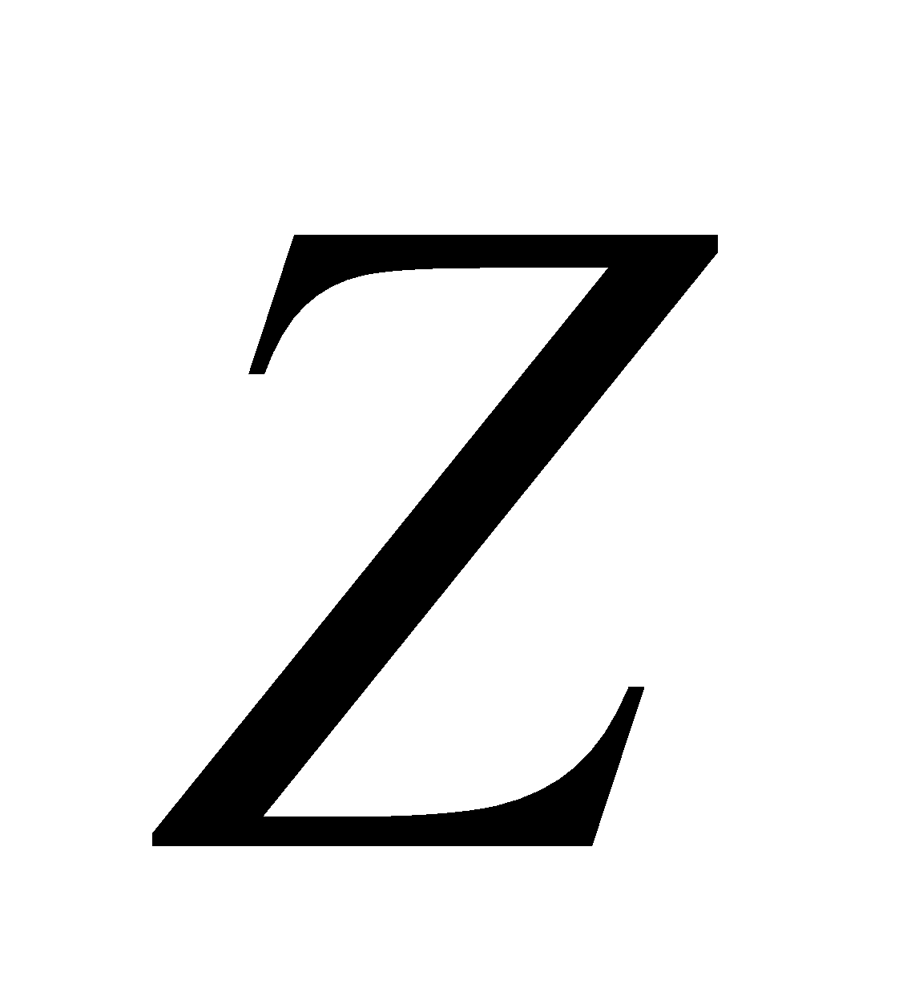
”字的首尾端即为相对面，根据这一特点作答．【详解】解：正方体的表面展开图，相对的面之间一定相隔一个正方形，
所以“数”与“美”是相对面，
故选：D．
【变式3】（2024·陕西汉中·二模）诸葛亮《诫子书》中有言“非学无以广才，非志无以成学”．如图是一个正方体的表面展开图，把展开图折叠成正方体后，“学”字对面的字是（ ）
A．非 B．广 C．才 D．以
【答案】D
【分析】本题考查了正方体的展开图，熟练掌握正方体展开图的特点“相对的面之间一定相隔一个正方形”是解题关键．
根据正方体的展开图的特点进行分析即可解答．
【详解】解：正方体的表面展开图，相对的面之间一定相隔一个正方形，即“学”与“以”是相对面，“非”与“才”是相对面，“无”与“广”是相对面．
故选：D．
题型五 含图案的正方体的展开图
【典例5】 （23-24六年级上·山东泰安·阶段练习）把左边的正方体的表面展开，可能得到的展开图是（ ）
 A．
A． B． C． D．
B． C． D．
【答案】C
【分析】本题考查正方体的表面展开图及空间想象能力，这类问题动手实际操作是解决问题的关键．
【详解】解：由题意可知，“■”、“★”、“●”、三个图案应该相邻，
A、“■”与“★”图案相对，故不符合题意；
B、“■”与“★”图案相对，故不符合题意；
C、根据有图案的表面之间的位置关系，是正确的展开图；
D、“★”图案的位置应在“●”上面，故不符合题意．
故选：C．
【变式1】（23-24七年级上·内蒙古包头·阶段练习）如图，把下边的图形折起来，它会变成选项的正方体（ ）

A．
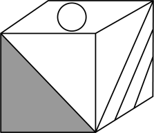
B．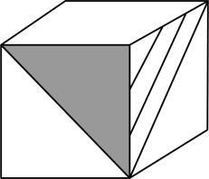
C．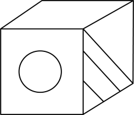
D．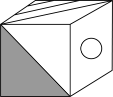
【答案】B
【分析】此题主要考查了展开图折叠成几何体，培养了学生动手动手操作的能力．
根据已知展开图动手操作得出符合题意的图形即可．
【详解】解：A、有黑色三角形的面和有阴影三角形的面应该交换位置，故此选项错误；
B、符合题意，此选项正确；
C、阴影三角形位置不对，故此选项错误；
D、有三角形的两个面三角形的位置不对，故此选项错误．
故选：B．
【变式2】（23-24七年级上·辽宁葫芦岛·阶段练习）如图所示是某个正方体的展开图，则这个正方体是（ ）

A． B．
B．
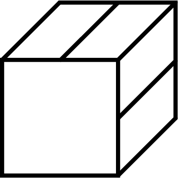
C．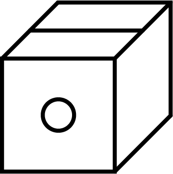
D．
【答案】C
【分析】本题考查了展开图折叠成几何体，根据带标记的面上的标记的位置关系作出正确判断是解题的关键．根据图形，正方体展开图折叠后带横线的面上的横线都指向带圆圈的面，并且三个面上的横线折叠后互相平行，然后作出判断即可．
【详解】解：由图可知，折叠成正方体后，二个带横线的面上的横线都不指向带圆圈的面，
并且二条横线互相平行，
纵观各选项，A、B、D不符合，C选项图形符合．
故选：C．
【变式3】（23-24七年级上·广东广州·期末）如图所示，正方体的展开图为（ ）

A．
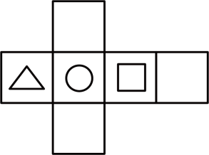
B． C．
C．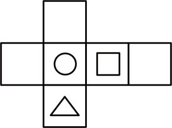
D．
【答案】C
【分析】本题考查几何体的展开图，掌握正方体展开图的特征是正确判断的关键．
【详解】解：根据正方体的展开与折叠，正方体展开图的形状进行判断C选项符合题意．
故选：C．
题型六 判断立体图形的截面形状
【典例6】（2023·贵州·模拟预测）如图，用一个平面去截一个正方体，截去的几何体是一个三棱锥，截面的图形是（ ）
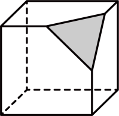
A．六边形 B．圆 C．正方形 D．三角形
【答案】D
【分析】根据截一个几何体，和三棱锥的特征，即可判断，
本题考查了，截一个几何体，三棱锥的特征，解题的关键是：熟练掌握三棱锥的特征．
【详解】解：用一个平面去截一个正方体，截去的几何体是一个三棱锥，截面的图形是三棱锥的一个面，三棱锥的每个面都是三角形，
故选： ．
．
【变式1】（2024·陕西西安·三模）用一个平面去截一个球体，截面形状可能为（ ）
A． B． C． D．
C． D．
【答案】C
【分析】本题主要考查了用平面截一个几何体，熟知用平面截一个球，截面的形状只会是圆是解题的关键．
【详解】解：用平面截一个球，截面的形状只会是圆，
故选：C．
【变式2】（23-24七年级上·河南郑州·期末）用一个平面去截以下几何体：圆柱，圆锥，球，三棱柱，长方体，七棱柱；能截得三角形截面的几何体有（ ）个．
A．3 B．4 C．5 D．6
【答案】B
【分析】本题考查判断平面截立体图形的截面，根据立体图形的组成逐个判断即可得到答案；
【详解】解：由题意可得，
能截得三角形截面的几何体是：圆锥，三棱柱，长方体，七棱柱，
故选：B．
【变式3】（23-24七年级上·河南平顶山·期末）用一个平面去截棱柱，截面的形状是一个六边形，那该棱柱的展开图不可能是（ ）
A． B．
B． C．
C． D．
D．
【答案】A
【分析】本题考查了截一个几何体，熟练掌握三棱柱，四棱柱，五棱柱，六棱柱的截面形状是解题的关键．
【详解】解：用一个平面去截一个三棱柱，截面的形状可能是：三角形，四边形，五边形，不可能是六边形；
用一个平面去截一个四棱柱，截面的形状可能是：三角形，四边形，五边形，六边形，，
用一个平面去截一个五棱柱，截面的形状可能是：三角形，四边形，五边形，六边形，七边形，
用一个平面去截一个六棱柱，截面的形状可能是：三角形、四边形、五边形、六边形、七边形、八边形，不可能为九边形，
故选：A．

一、单选题
1．（23-24六年级上·山东泰安·阶段练习）用一个平面去截一个正方体，截出截面不可能是（ ）
A．三角形 B．五边形 C．六边形 D．七边形
【答案】D
【分析】本题考查用一个平面去截一个正方体，理解正方体总共六个面，截面最多为六边形是解决问题的关键．
【详解】解：用一个平面去截一个正方体，截面可能是三角形，四边形，五边形，六边形，不可能为七边形，
故选：D．
2．（2024·河南许昌·二模）如图是一个正方体盒子的展开图，把展开图折叠成正方体后，和“一”字一面相对的面上的字是（ ）
A．中 B．考 C．夺 D．魁
【答案】D
【分析】本题主要考查了正方体相对两个面上的文字，掌握正方体的表面展开图是解题的关键．
正方体的表面展开图，相对的面之间一定相隔一个正方形或“Z”字的首尾端即为相对面，根据这一特点作答．
【详解】解：正方体的表面展开图，相对的面之间一定相隔一个正方形，
所以“一”与“魁”是相对面，
故选：D．
3．（23-24七年级上·广东潮州·期中）已知某多面体的平面展开图如图所示，其中是棱锥的有（ ）
A．1个 B．2个 C．3个 D．4个
【答案】B
【分析】本题主要考查了简单几何体的展开图，熟知棱柱和棱锥的展开图的特点是解题的关键．
【详解】解：第1个图是三棱锥；
第2个图是三棱柱；
第3个图是四棱锥；
第4个图是三棱柱．
∴是棱锥的有2个．
故选：B．
4．（23-24七年级上·江西萍乡·期中）将如图所示的正方体沿某些棱展开后，能得到的图形是（ ）
A． B．
B． C．
C． D．
D．
【答案】D
【分析】此题主要考查了几何体的展开图，根据平面图形的折叠及立体图形的表面展开图的特点解答即可．
【详解】解：由原正方体知，带图案的三个面相交于一点，而通过折叠后A不符合，且B、C折叠后图案的位置不符，所以能得到的图形是D．
故选：D．
5．（2024·河北张家口·三模）用硬卡纸做一个骰子，使骰子相对两面的点数之和为7，折叠前后如图所示，下列判断正确的是（ ）

A．点数1的对面是 面 B．点数2的对面是
面 B．点数2的对面是 面
面
C．， 两个面的点数和为9 D．，两个面的点数和为6
两个面的点数和为9 D．，两个面的点数和为6
【答案】C
【分析】本题考查正方体展开图的相对面，根据同行隔一个，确定出相对面，再进行判断即可．
【详解】解：由图可知：点数1的对面是面，故的点数为；
点数 的对面是面，故的点数为
的对面是面，故的点数为 ；
；
点数 的对面是面，故的点数为，
的对面是面，故的点数为，
∴，两个面的点数和为9，，两个面的点数和为8；
故选C．
二、填空题
6．（23-24七年级上·山东枣庄·期末）用一个平面去截一个三棱柱，截面可能是 ．（填一个即可）
【答案】三角形（答案不唯一）
【分析】此题主要考查了截一个几何体，解决本题的关键是理解截面经过三棱柱的几个面，得到的截面形状就是几边形；经过截面相同，经过位置不同，得到的形状也不相同．根据平面截三棱柱的不同角度与位置判断相应截面形状即可．
【详解】解：当截面与底面平行时，得到的截面形状是三角形；
当截面与底面垂直且经过三棱柱的四个面时，得到的截面形状是长方形；
当截面与底面斜交且经过三棱柱的四个面时，得到的截面形状是等腰梯形．
故答案为：三角形（答案不唯一）
7．（23-24七年级上·四川成都·阶段练习）如图是一个正方体的展开图，如果正方体相对的面上标注的值相等，那 ， ．
， ．
【答案】 
【分析】本题主要考查了正方体相对两个面上的文字，正方体的表面展开图，相对的面之间一定相隔一个正方形，根据这一特点找出相对面，然后求解即可得到x、y的值．
【详解】解：∵正方体相对的面上标注的值相等，
∴，
解得，
故答案为：，．
8．（2024·云南昭通·二模）如图，这是一个圆柱形笔筒，量的笔筒的高是 ，底面圆的直径是
，底面圆的直径是 ，则这个笔筒的侧面积为
，则这个笔筒的侧面积为  （结果保留
（结果保留 ）．
）．

【答案】
【分析】本题考查了圆柱的侧面积，熟练掌握圆柱的侧面积为，其中为底面圆直径， 为圆柱的高是解题的关键．
为圆柱的高是解题的关键．
根据笔筒的侧面积为，计算求解即可．
【详解】解：由题意知，笔筒的侧面积为 ，
故答案为：．
9．（23-24九年级下·安徽·开学考试）某奶茶店推出了新款奶茶——“冰桶”系列，受到了年轻消费者的喜爱，已知该系列奶茶容器的轴截面可以看作是一个矩形与一个截去一个角的三角形拼接而成，其轴截面和俯视图如图所示．商家想要在“冰桶”的侧筒上贴上包装纸（没有重叠部分，不考虑材料厚度），则包装纸的面积为 ．
【答案】
【分析】本题考查了求组合几何体的侧面积，由图形可知，奶茶容器的侧面积等于圆柱的侧面积 圆台的侧面积，据此计算即可求解，掌握圆柱的侧面积和圆台的侧面积的计算方法是解题的关键．
圆台的侧面积，据此计算即可求解，掌握圆柱的侧面积和圆台的侧面积的计算方法是解题的关键．
【详解】解：由图形可得，
包装纸的面积，
故答案为：．
10．（23-24七年级上·安徽阜阳·期末）一个不透明小立方体的六个面上分别标有数字1，2，3，4，5，6，其展开图如图1所示．

（1）与数字“5”相对的面上的数字是 ；
（2）在一张不透明的桌子上，按图2方式将三个这样的小立方体搭成一个几何体，则该几何体能看得到的面上数字之和最大是 ．
【答案】 6 53
【分析】本题考查了正方体的表面展开图，掌握正方体的表面展开图的特征是解答本题的关键．
（1）根据正方体表面展开图的特征，即得答案；
（2）结合正方体的摆放方式，要使该几何体能看得到的面上数字之和最大，则看不见的面数字之和要最小，逐步求出三个正方体看不见的面上的最小数字，即得该几何体能看得到的面上数字，即可求得数字之和的最大值．
【详解】（1）由图1可知，1的对面是3，2的对面是4，5的对面是6；
故答案为：6．
（2）如图2，要使该几何体能看得到的面上数字之和最大，则看不见的数字之和要最小，
上面的正方形体有一个面被遮住，则这个数字为1，能看见的面的数字之和为；
左下的正方体有3个面被遮住，其中两个为相对面，这三个面的数字分别为1，2，3，则能看见的面的数字之和为；
右下的正方体有2个面被遮住，这两个面不是相对面，这两个面的数字分别为1，2，则能看见的面的数字之和为；
所以该几何体能看得到的面上数字之和最大是．
故答案为：53．
三、解答题
11．（23-24七年级上·江苏宿迁·阶段练习）指出下列平面图形各是什么几何体的展开图

（1） ；（2） ；（3） ； （4） ．
【答案】（1）圆柱；（2）圆锥；（3）三棱柱；（4）三棱锥
【分析】本题考查几何体展开图，解题的关键是熟悉这几种几何体的特征.
（1）根据圆柱展开图的特点可知该几何体是圆柱；
（2）根据圆锥展开图的特点可知该几何体是圆锥；
（3）根据三棱柱展开图的特点可知该几何体是三棱柱；
（4）根据三棱锥展开图的特点可知该几何体是三棱锥。
【详解】解：（1）两底面是圆，侧面是长方形，故该几何体是圆柱；
故答案为：圆柱；
（2）底面是圆，侧面是扇形，故该几何体是圆锥；
故答案为：圆锥；
（3）两底面是三角形，侧面是三个长方形，故该几何体是三棱柱；
故答案为：三棱柱；
（4）底面是三角形，侧面是三个三角形，故该几何体是三棱锥；
故答案为：三棱锥。
12．（23-24七年级上·江西抚州·期中）如图所示是一个几何体的表面展开图．

(1)该几何体的名称是 ，
(2)根据图中所给信息，求该几何体的侧面积和体积（结果保留 ）
）
【答案】(1)该几何体的名称是圆柱
(2)侧面积为 ；体积为
；体积为
【分析】本题考查的是圆柱的侧面积和体积，熟记公式是解答关键．
（1）该几何体的名称是圆柱体，底面半径是，据此解答；
（2）根据圆柱侧面积=底面周长×高，圆柱体积=底面积×高，即可解答．
【详解】（1）该几何体的名称是圆柱，
故答案为：圆柱；
（2）其底面半径为1，该几何体的侧面积为： ；
；
该几何体的体积．
13．（23-24七年级上·全国·课堂例题）如图是一个食品包装盒的展开图（图中的六边形的六条边相等）．

(1)请写出这个包装盒的立体图形的名称；
(2)请根据图中所标的尺寸，求这个立体图形的侧面积．
【答案】(1)六棱柱；
(2)．
【分析】（1）观察图形可知两个正六边形为立体图形的底面，六个长方形为侧面，判断即可；
（2）侧面积即图形中六个长方形的面积，已知了长方形的长和宽，根据长方形的面积公式计算即可．
【详解】（1）解： 两个正六边形为立体图形的底面，六个长方形为侧面，
两个正六边形为立体图形的底面，六个长方形为侧面，
 这个包装盒的立体图形是正六棱柱；
这个包装盒的立体图形是正六棱柱；
（2）解：六个长方形为侧面，
又∵长方形长为a、宽为b，
∴ 其侧面积为．
【点睛】本题考查立体图形的展开图，解决这类问题的关键是熟悉常见的圆椎、棱锥、圆柱、棱柱等的展开图的特点，本题中的展开图很显然是一个柱体的展开图，由于底面是正六边形，故此应该是六棱柱，同时要明确正六棱柱的侧面是6个全等的长方形，计算侧面积，只需计算6个长方形的面积即可．
14．（23-24七年级上·辽宁沈阳·期中）如图所示三棱柱，高为 ，底面是一个边长为
，底面是一个边长为 的等边三角形．
的等边三角形．

(1)该三棱柱有______条棱，有______个面；
(2)用一个平面去截该三棱柱，截面形状不可能是______（填序号）；
①三角形；②长方形；③五边形；④六边形；⑤圆形
(3)该三棱柱的所有侧面的面积之和是______．
【答案】(1)9，5
(2)④⑤
(3)
【分析】本题考查了三棱柱，截一个几何体，几何体的侧面积等知识，熟练掌握三棱柱，截一个几何体，几何体的侧面积是解题的关键
（1）根据三棱柱的形体特征作答即可；
（2）根据截三棱柱所得的截面形状进行判断作答即可；
（3）根据侧面积为3个相同的，长为，宽为的长方形的面积和，计算求解即可．
【详解】（1）解：由题意知，该三棱柱有9条棱，有5个面，
故答案为：9，5；
（2）解：由题意知，用一个平面去截该三棱柱，截面形状可以是三角形，长方形，梯形，五边形，
∴①②③不符合要求；④⑤符合要求；
故答案为：④⑤；
（3）解：由题意知，三棱柱的所有侧面的面积之和是，
故答案为：．
15．（23-24六年级上·山东威海·期末）张明同学设计了某个产品的正方体包装盒如图所示，由于粗心少设计了其中一个顶盖，请你把它补上，使其成为一个两面均有盖的正方体盒子．
(1)共有______种弥补方法；
(2)任意画出一种成功的设计图（在图中补充）；
(3)在你帮忙在设计成功的图中，把2，3，4，5，6，7这些数字分别填入六个小正方形，使得折成的正方体相对面上的两个数相加的和相等．（直接在图中填上）
【答案】(1)4
(2)画图见解析
(3)画图见解析
【分析】（1）根据正方体展开图的特点：中间一行4个作侧面，上下两个各作为上下底面，共有6种基本图形，而符合图中样式的有四种，据此可得到弥补方法；
（2）正方体共有11种展开图，本题可根据（1）中的添补方法，画出完整的展开图；
（3）根据，把各数填到展开图中相对的面上即可．
【详解】（1）解：由正方体的展开图型特点，
可得共有4种弥补方法；
（2）设计其中一个顶盖，使其成为一个完整的正方体盒子，
如图所示，即是一个完整的正方体盒子，
答案不唯一；
（3）把2，3，4，5，6，7这些数字分别填入六个小正方形中，使折成的正方体相对面上的两个数相加的和相等，
如图所示，折成的正方体盒子相对面上的两个数相加都得9，
答案不唯一；
16．（23-24六年级上·山东烟台·期末）如图是一个几何体的表面展开图．

(1)写出该几何体的名称__________；
(2)用一个平面去截该几何体，截面形状可能是__________（填全所有可能的序号）；
①三角形；②四边形；③五边形；④六边形
(3)根据图中标注的长度（单位： ），求该几何体的表面积和体积．
），求该几何体的表面积和体积．
【答案】(1)长方体
(2)①②③④
(3)表面积是，体积是，见解析
【分析】本题主要考查长方体的展开图及其表面积与体积的计算方法，熟练掌握长方体的基本性质是解题的关键．
（1）直接根据几何体的展开图判断即可；
（2）根据长方体有六个面，根据长方体的基本性质即可得到答案；
（3）利用长方体的表面积计算公式及体积计算公式求解即可．
【详解】（1）解：由于几何体的展开图共有 个面，各个面有长方形或正方形，
个面，各个面有长方形或正方形，
故该几何体的名称为：长方体；
（2）解：由于长方体有六个面，
用平面去截长方体时最多与六个面相交得六边形，最少与三个面相交得到三角形，
故截面形状可能是三角形、四边形、五边形、六边形．
（3）解：，
．